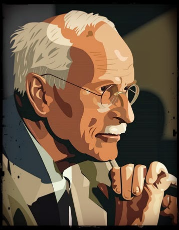

|
Hemos vivido en un mundo lleno de prejuicios, pero ha llegado el momento que personas como tú y como yo hagamos de este mundo un lugar en donde ser diferente no sea un obstáculo, sino un beneficio del cual tendemo que enorgullecernos. Está bien pedir ayuda, está bien necesitarla; esto es valiente y revolucionario.
Parte de este proceso es reconocer que la vida no es un círculo eterno sin cambios aparentes, habrán momentos de dificultad y tristeza, pero gracias a la voluntad que tienes al entrar a nuestra comunidad, encontrarás solución a cada uno de estas situaciones.
-Carl Jung  La individuación; según Carl Jung, uno de los grande padres de la piscología analítica de la cual hablaremos más adelante, nos propone este término el cual tiene su base en Afrontar y sanar los traumas para así hacer conscientes las sombras y miedos; porque de eso estamos compuestos, somos seres de luz y de oscuridad, que tenemos nuestros demonios, y para hacer frente a ello y no llamar destino a las situaciones de la vida, sino ser actores de nuestro propio camino, debemos encontrarnos con todo aquello que queremos eludir. "El camino hacia la sanación, hacia la reparación de los efectos de la adversidad, partía de la aceptación según Jung". La individuación; según Carl Jung, uno de los grande padres de la piscología analítica de la cual hablaremos más adelante, nos propone este término el cual tiene su base en Afrontar y sanar los traumas para así hacer conscientes las sombras y miedos; porque de eso estamos compuestos, somos seres de luz y de oscuridad, que tenemos nuestros demonios, y para hacer frente a ello y no llamar destino a las situaciones de la vida, sino ser actores de nuestro propio camino, debemos encontrarnos con todo aquello que queremos eludir. "El camino hacia la sanación, hacia la reparación de los efectos de la adversidad, partía de la aceptación según Jung".

Psicología analíticaLa psicología analítica parte de la existencia de un inconsciente colectivo en la psique de cada individuo, de modo que la consciencia, ligada al yo, no sólo ha de vérselas con los contenidos propios de lo inconsciente personal, los complejos, personalizados en lo que Jung llama sombra, sino con todos los contenidos transpersonales que moran en nuestro interior, los arquetipos. © Ela | Rompiendo barreras |